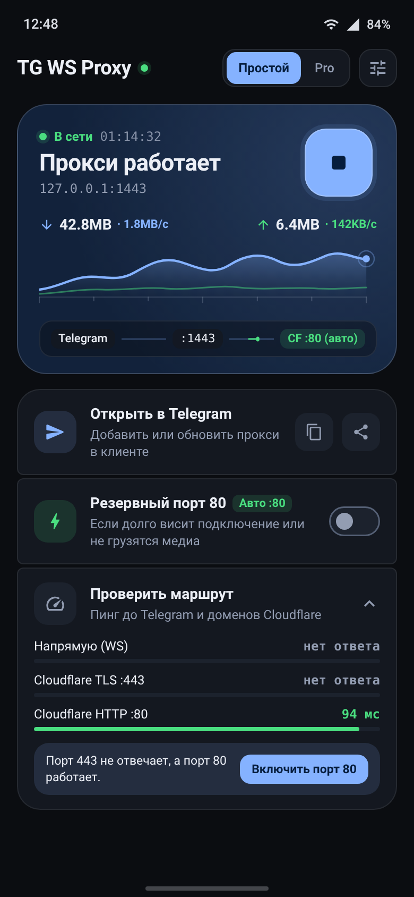
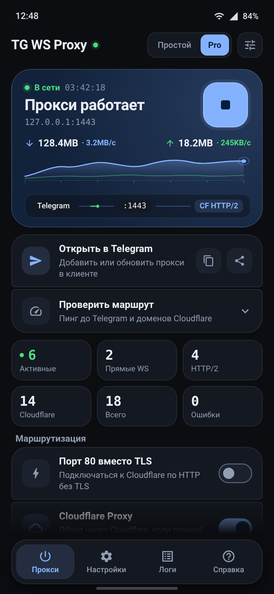
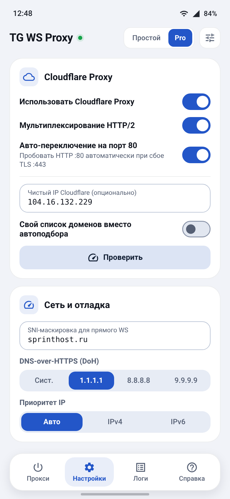

Локальный прокси для Telegram без VPN
Поднимает MTProto WebSocket-прокси прямо на телефоне по протоколу Flowseal/tg-ws-proxy. Чистый Kotlin (~1.9 МБ), без root и чужих серверов, с автопереходом на HTTP :80 за 750 мс.



Как подключить
Обновления ставятся поверх прошлой версии без потери настроек.
Установите APK
Один универсальный файл для Android 8.0+ — выбирать архитектуру процессора не нужно.
Запустите прокси
Нажмите кнопку запуска на главном экране — откроется локальный MTProto-порт 127.0.0.1:1443.
Откройте в Telegram
Кнопка «Открыть в Telegram» передаст прокси через tg://proxy в официальный клиент, AyuGram, NekoGram или Plus Messenger.
Если плохо грузятся медиа или прокси останавливается в фоне
Как устроен прокси
Полная совместимость с Flowseal/tg-ws-proxy v1.12.0+ без VPN-слота Android.
Чистый Kotlin вместо тяжёлых обёрток
Без встроенных Rust, Python или Go-бинарников. Zero-copy криптодвижок AES-CTR, прямой SocketChannel I/O и низкий расход памяти.
Автопереход на HTTP :80 и HTTP/2 для медиа
Если TLS на 443-м порту режется, параллельная гонка переключает Cloudflare Proxy и ваши CF Workers на 80-й порт меньше чем за секунду. Шифрование MTProto сохраняется.
Сетевой стек под сложные провайдеры
Встроенный DNS-over-HTTPS (1.1.1.1 / 8.8.8.8 / 9.9.9.9), Happy Eyeballs, опциональный чистый IP Cloudflare, балансировка доменов по EWMA и Fake TLS (ee-секрет с X25519MLKEM768).
Сделано под поведение Android в фоне
Сброс зависших сокетов при смене сети или VPN, плитка в шторке с активным маршрутом, hot-reload настроек без перезапуска сокета и JSON-экспорт конфига.
Что внутри APK
Все ограничения и сборку можно проверить прямо по исходникам.
| Адрес по умолчанию | Только 127.0.0.1:1443 внутри устройства. При смене на 0.0.0.0 показывается предупреждение. |
|---|---|
| Зависимости | Только AndroidX, Compose, Kotlin Coroutines и OkHttp. Без рекламы, аналитики и Google Play Services. |
| Права и бэкап | allowBackup="false", секреты и домены вырезаются из логов, право REQUEST_INSTALL_PACKAGES не запрашивается. |
| Сборка релизов | Публичный GitHub Actions workflow с файлом SHA256SUMS.txt и отключённым блоком dependenciesInfo. |